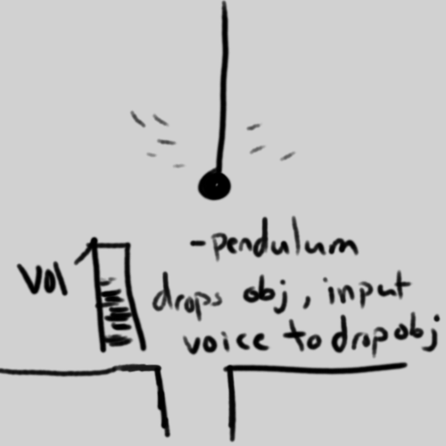
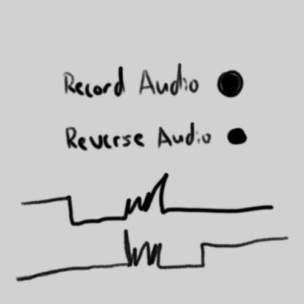
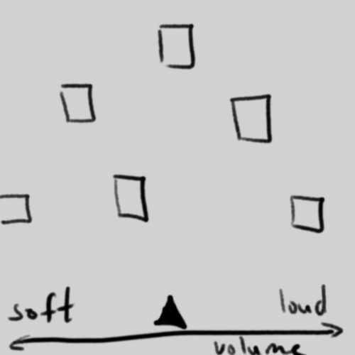
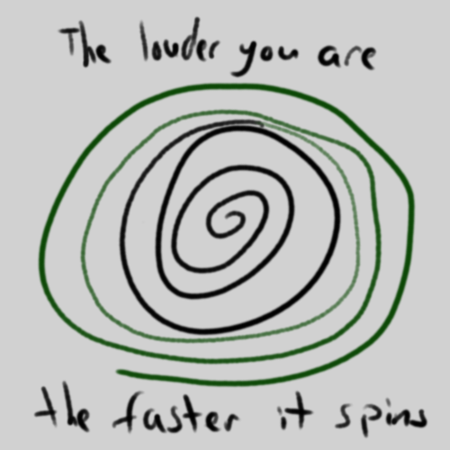
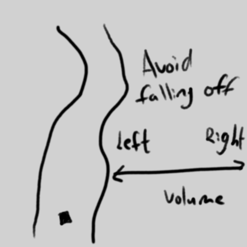
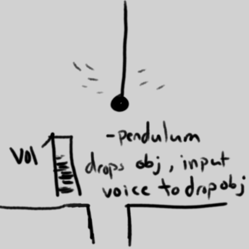
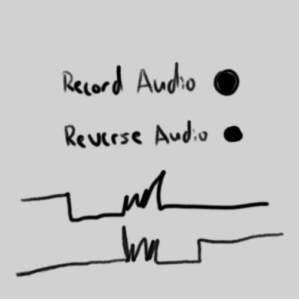
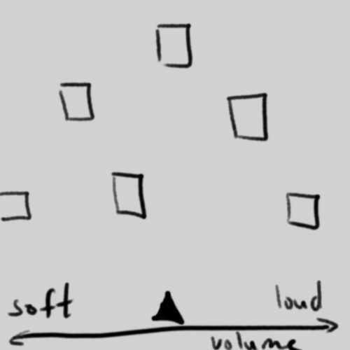
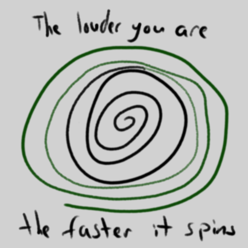
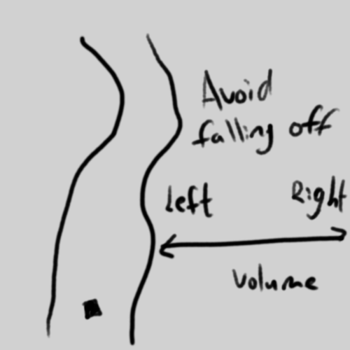

Violin Tuner Report
A Violin Tuner App
This project was made with React frontend. The purpose of this project was to incorporate audio without voice command. From there I had several ideas pertaining to what the App could be.
 









From these rough sketches, sketch number 2 was the closet to what I would imagine if the dark souls series was reduced to a single button game. The other sketches was missing a crucial aspect of dark souls which is the boss fight itself. From my decision, I yet again created another 10 sketches of sketch 2 to further develop the idea.
In these sketches, there are a variety of different approaches I could do for a clicker game. Sketch 2 is an interesting choice, as it takes player to a first person perspective, however, the animation would need to be precise in order to have a seamless experience. As a result, Sketch 10 and 8 were the ones I had in mind on creating the game. Since dark souls is a hard game I wanted to make a gauntlet run that can roughly simulate the difficulty of the game. For Sketch 8, it is a depiction of a boss battle that requires the player to go offensively and defensively. Of course since the game is a singular button, the player's aggression would be completely dictated by the game's pace. However, in every project one of the most important aspect is if the product is achievable or not. Unfortunately, it is my first time working with React and with limited time. I decided to go with a fusion of sketch 1 and sketch 5. A simple button tuner that has a timer for additive difficulty and a health bar like any other rpgs.
Artistic Choices
- The pulsing red button conveys the notion of urgency. Which is what I want the player to have when trying to mash the button before the timer runs out
- The timer like the pulsing red button gives out the sense of urgency and adding some difficulty to the game to better emulate how dark souls feel.
- The Dark background compliments the red pulsing button by making it stand out
- The Adventurer sprite is just like how every other player is in the game, an Adventurer who is exploring an unknown world
- I chose this worm monster because of its features. It has similar artistic style as the adventurer and it's on the level of grotesque like dark souls
- The Health bar is a common feature of any rpg games and it's good feedback for the player's progress